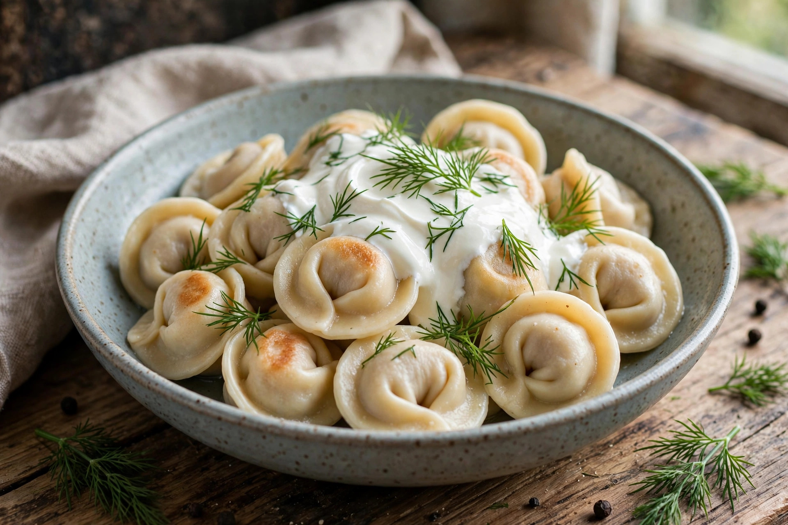

From Wikipedia, the free encyclopedia
| Pelmeni | |
|---|---|
 | |
| Type | Dumpling |
| Place of origin | Russia (Ural / Siberia) |
| Main ingredients | Unleavened dough; minced meat (pork, beef, lamb), onion, black pepper |
Pelmeni (Russian: пельмени) are Russian dumplings consisting of a filling wrapped in thin unleavened dough. Regarded as a national dish of Russia, they are traditionally associated with the Ural region and Siberia, where they were made in large batches and stored frozen outdoors through the winter.
The name is thought to derive from the Permic languages of the Urals: pel' meaning "ear" and nan' meaning "bread" — "bread ears", after the dumplings' ear-like shape. Popularised across Russia during Siberian settlement, pelmeni became a household staple; making them by the hundreds was a communal family activity.
The dough of flour and water (sometimes with egg) is rolled thin and cut into small rounds. The filling is minced meat — traditionally a mixture of beef, pork, and lamb — seasoned with onion, salt, and black pepper. The dumplings are boiled in water or broth until they float, and served with sour cream, butter, vinegar, or mustard. Siberian-style pelmeni are served in broth; fried pelmeni, boiled then pan-fried in butter, are also popular.